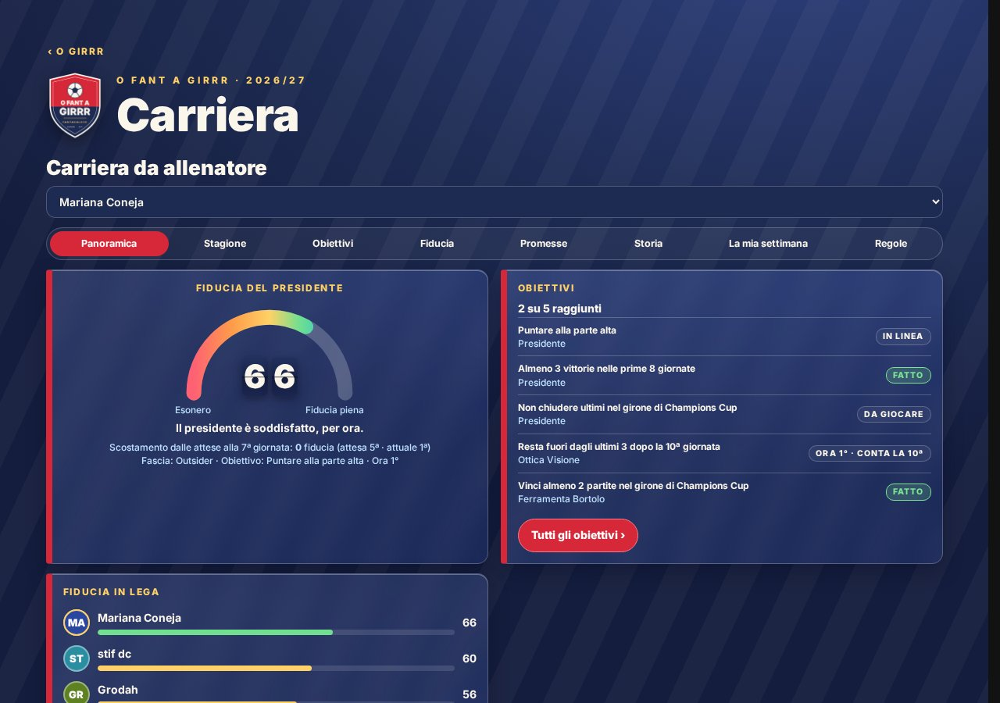
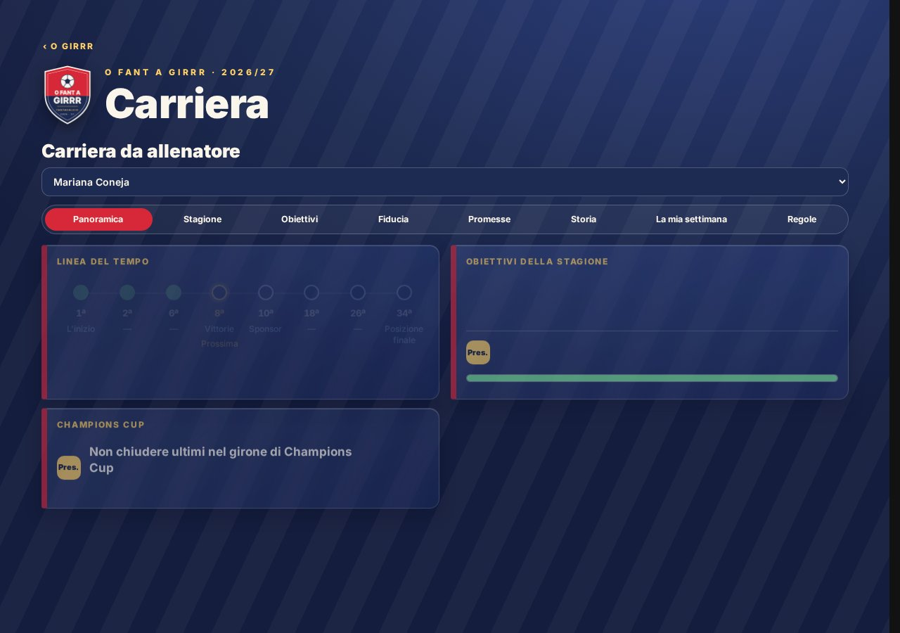
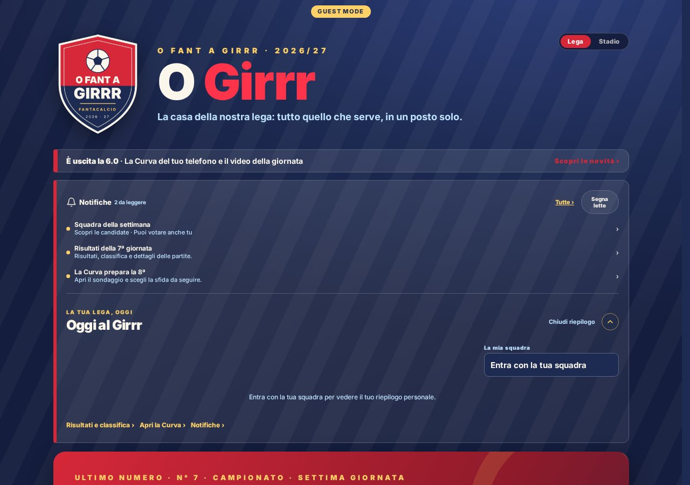
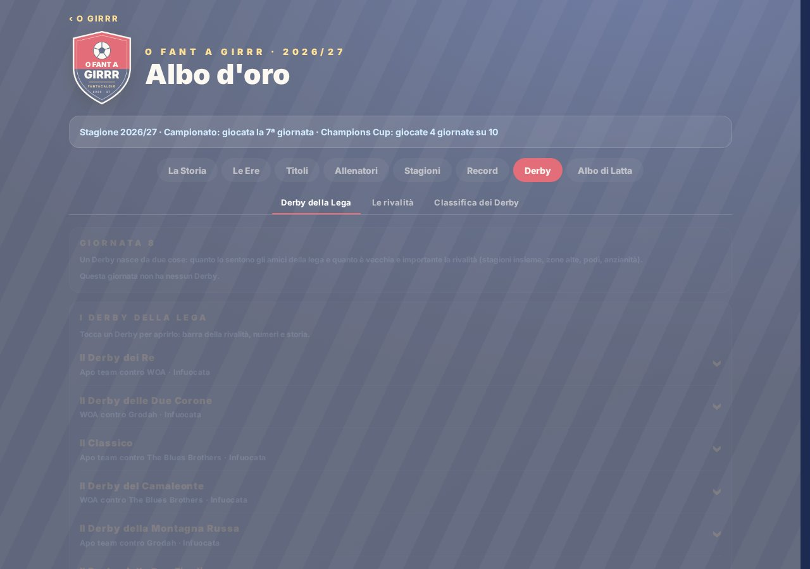

Carriera, anche da ospite

Tutte le schede della Carriera sono consultabili anche senza codice; niente premi o richieste riservate agli allenatori.
Dove: Carriera.
Anteprima 6.0.1
Novità preparate da Claude, qui raccolte per la prova. Lo specchio navigabile comprende anche la successiva 6.0.2.

Tutte le schede della Carriera sono consultabili anche senza codice; niente premi o richieste riservate agli allenatori.
Dove: Carriera.

La linea del tempo comprende la prima giornata e i premi mostrano il logo dello sponsor. La 6.0.2 elimina anche il salto automatico alla prossima scadenza.
Dove: Carriera → Obiettivi.

Le sezioni della Lega sono grandi riquadri in una colonna. Puoi continuare a scegliere la grafica Stadio.
Dove: Home della Lega.

Derby della Lega, Le rivalità e Classifica dei Derby sono tre schede distinte in Albo, nella stessa pagina.
Dove: Albo → Derby.